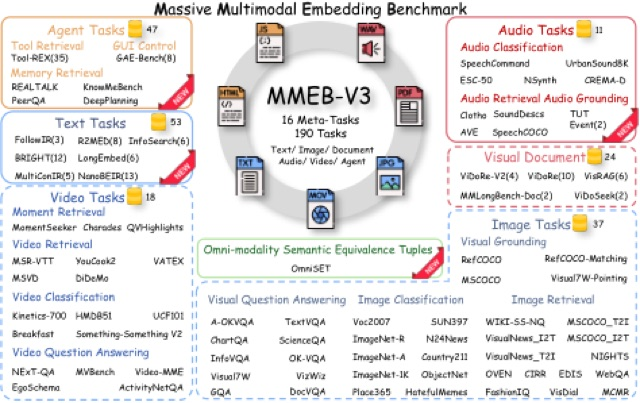
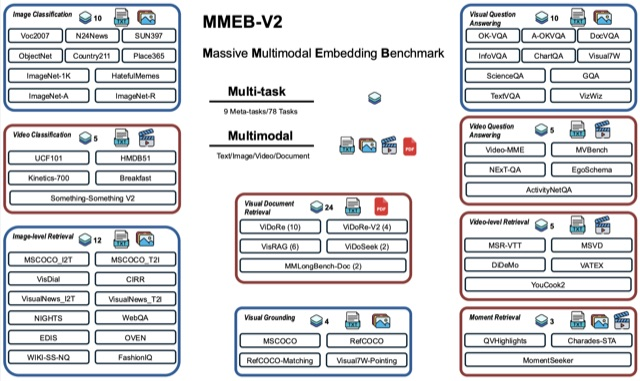

Mingyi Su
I am an undergraduate researcher at the University of Waterloo, working with Prof. Wenhu Chen at TIGER-AI-Lab. I have also worked with Prof. Jimmy Lin on information retrieval and with Prof. Richard Hughson on machine learning for biomedical signals.
I am seeking graduate research opportunities.
Email / Scholar / GitHub / Hugging Face / LinkedIn

Research
I am interested in trustworthy and reliable AI agents, evaluation of LLMs and agents, and multimodal representation learning, as well as reinforcement learning and reward modeling. Papers where I made major contributions are highlighted.

Proposed Cross-Modal Equivalence Tuples (OmniSET) and built the cross-modal retrieval benchmark across text, image, video, and speech.

Led the video classification benchmark in MMEB-V2; built and maintain the MMEB leaderboard.
Experience
- Building an agentic RAG pipeline (planning, retrieval, tool execution, self-evaluation) to augment LLM responses for IT service desk tickets.
- Designed and synthesized the cross-modal retrieval evaluation dataset for MMEB-V3.
- Developed evaluation pipelines for MMEB-V2 to assess vision-language representations across multimodal embedding tasks.
- Fine-tuned Qwen2-VL models with contrastive learning on multimodal retrieval and embedding datasets.
- Built the MMEB Leaderboard to support model submissions and standardized evaluation.
- Annotated 1k+ AI-generated videos with scores and rationales for VideoScore2.
- Designed modeling pipelines for astronaut vascular health data collected in microgravity.
- Modeled biomedical time series (ECG, respiratory signals) with LSTM and temporal convolutional networks for anomaly detection and forecasting.
- Verified search trajectories and retrieved evidence for BrowseComp-Plus, a benchmark for deep search agents over a fixed, human-verified corpus.
Projects
- Multi-generator, multi-judge LLM evaluation for medical documentation without reference answers, assessing factuality, completeness, and formatting.
- Built preference datasets from judge consensus and fine-tuned Qwen3-Instruct (4B) with TRL-based alignment.
- ML pipeline that extracts structured ECG waveforms from photographs using a CNN with spatial attention.